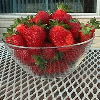

Index |
This file contains links to a variety of illustrations and photos
of Strawberries and Strawberry Related things. If an image is physically
located at my site, an example of the image will be shown in the table. If the
original is small, the whole image will be shown. Otherwise you will see a
"thumbnail" image which is either a smaller version of the original
or a representative piece out of the bigger whole. As far as I am aware, all of the images which are physically located at my site are free for anyone to use. Check with the site the files are stored at for other images. If anyone finds something here that shouldn't be publicly available please send me email at xxx@yyyy.com so that I can correct the situation. Anyone who has images or photos of strawberries which they would like to make publicly available is also free to send me an electronic copy for inclusion at this site. |
Icons |
|
GIF |
Strawberry Facts Page Icon, by Jenni A. M. Merrifield |
| GIF | Strawberry Icon, by Jenni A. M. Merrifield |
||
| GIF | Tiny Strawberry Icon | ||
| GIF | Strawberry Plant, by Kristine Adam |
||
Backgrounds and Borders |
JPG | Strawberry Vine Border By Jenni A. M. Merrifield |
|
| GIF | Thin Strawberry Border From Lassen County Nurseries Home page |
||
Clip Art |
GIF | Strawberry From the Page Header of the Nova Scotia Strawberry Newsletters |
|
| GIF | Strawberries, Left | ||
| GIF | Strawberries, Right | ||
| [Not Local] | All images are in JPEG format Slick #1 Slick #2 Slick #3 |
Advertising "slicks" from The California Strawberry
Commission. (Each "slick" displays a collection of B&W clip-art. Each clip art image will bring up a larger version when selected) |
|
Photographs |
GIF | Anyone for Strawberry Shortcake? | |
| JPG | Bowl of Fresh Strawberries | ||
| GIF | Jumble of Fresh Strawberries | ||
|  | JPG | Bowl of Strawberries Photo by Frank H. Schmidt |
|
| JPG | Serving up Strawberries Photo by Frank H. Schmidt |
||
| JPG | Bowl on Wooden Deck Photo by Frank H. Schmidt |
||
| JPG | Bowl with Lake View Photo by Frank H. Schmidt |
||
| JPG | A Cup of Fresh Strawberries Photo by Frank H. Schmidt |
||
| JPG | Strawberries and Coffee Maker Photo by Frank H. Schmidt |
||
| JPG | Big Bowl of Strawberries Photo by Frank H. Schmidt |
||
| JPG | Strawberries with Cookbook Photo by Frank H. Schmidt |
||
| JPG | Strawberries and Cream Photo by Frank H. Schmidt |
||
| JPG | Strawberries in a Boot Photo by Frank H. Schmidt |
||
| JPG | Strawberry and US Quarter Photo by Frank H. Schmidt |
||
| JPG | Bumble Bee and Strawberry Flowers Photo by Frank H. Schmidt |
||
| JPG | Rows of Strawberry Photo by Frank H. Schmidt |
||
| [Not Local] | All images are in JPEG format Strawberry Images Page |
Strawberry Image section of the
The Food Resources Page (This is a GREAT site for all kinds of publicly available food images ) |
|
Artistic Images |
GIF | Sketch of Strawberries (Artist Unknown) Pencil Crayon |
|
| LBM JPG |
Strawberry Eyes (Artist Unknown) Computer Generated Art |
||
| GIF | ASCII Strawberry by Jenni A. M. Merrifield Coloured ASCII art converted to GIF image |
||
| TIF GIF JPG |
Berries and Leaves by Anne Ridsdale Mott Acrylic on Fabric (scanned image modified by computer) |
||
Miscellaneous Items |
JPG | Canadian 2-Cent Strawberry Stamps | |
| GIF | Swedish Strawberry Stamp | ||
| GIF | Stu Beary Stu Beary is a teddy bear with a strawberry body. Stu Beary was designed by a woman from the Vancouver Lower mainland. The sewing pattern and a full sewing kit for this delightful toy are available upon request. For more information, email Laura Mah at Laura_Mah@mindlink.bc.ca |
Date: Comment:
Dec. 11, 1998 - Added new images from Frank Schmidt
- Updates and general clean up
Sep. 24, 1997 - Added PICS information
- Removed URL-Minder form
- Addition of two new images
Apr. 05, 1997 - Addition of Index to this page
- Reorganization of image links into index categories
Feb. 23, 1997 - Correction to Food Resources Image Page link
Feb. 09, 1997 - Changed URLMinder form to use new version
- Corrected spelling to British/Canadian
- Added WIDTH and HEIGHT tags to images
- Changed file names for strawberry graphics
Nov. 15, 1996 - background colour change
Oct. 28, 1996 - Modifications for move to 'www.jamm.com'
Apr. 21, 1996 - Added Link to Text only version of pages
Mar. 26, 1996 - Added "keywords" and "description" META tags
Mar. 24, 1996 Initial Creation for URL at vanbc.wimsey.com/~jam/
{kind=link}
{kind=link}
{kind=link}
{kind=link}
{kind=link}
{kind=link}
{kind=link}
{kind=link}
{kind=link}
{kind=link}
{kind=link}
{kind=link}
{kind=link}
{kind=link}
{kind=link}
{kind=link}
{kind=link}
{kind=link}
{kind=link}
{kind=link}
{kind=link}
{kind=link}
{kind=link}
{kind=link}
{kind=link}
{kind=link}
{kind=link}
{kind=link}
{kind=link}
{kind=link}
{kind=link}
{kind=link}
{kind=link}